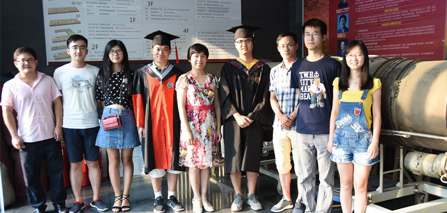

北京大学纳米化学研究中心张艳锋研究员课题组博士后招聘

北京大学纳米化学研究中心张艳锋研究员课题组（北京石墨烯研究院（BGI），石墨烯玻璃研究部）主要从事石墨烯及其他新型二维材料的可控制备、新奇物理性质及在能源领域的应用研究，积极与相关机构和企业合作，解决石墨烯等二维材料的大面积、高质量制备与应用研发过程中的关键科学问题。根据工作需要，现拟招聘相关研究方向的博士后若干名，欢迎国内外具有相关研究背景的优秀博士毕业生加盟。
拟招聘方向:
岗位待遇:
联系方式:
1.玻璃上石墨烯的制备与应用研发
要求具有纳米碳材料或功能薄膜领域相关研究经验。具有纳米材料制备与表征、光学功能薄膜的制备、气流仿真模拟、特种玻璃研制等相关背景者优先考虑。
2.新型二维材料的制备与应用研发
应聘条件:
要求具有纳米材料制备与清洁能源应用相关研究经验。具有二维材料合成及表征、扫描隧道显微镜（STM）表征、电子器件加工及电学性质表征、电化学储能及能源转换器件构筑等相关背景者优先考虑。
1. 已获得材料、物理、化学、化工、电子、计算机模拟或相关专业的博士学位，或近期内能顺利完成博士论文答辩并获得博士学位；
2. 身心健康，积极进取，具有良好的职业道德及合作精神，无不良记录，具备独立开展科研的能力、对科研浓厚的兴趣、高度的责任心；
3. 具有良好的中、英文写作和交流能力，已发表过多篇SCI论文。
根据国家博士后管理规定以及候选人的教育和科研背景综合确定。具体内容可参见北京大学博士后网站：https://postdocs.pku.edu.cn/。
根据科研成果鼓励申请北京大学“博雅”博士后项目和“博士后创新人才支持计划”等资助。
请将个人简历、成果列表发给：yanfengzhang@pku.edu.cn。邮件标题请注明“博士后申请 本人姓名”。初选合格者将通知面试。
根据科研成果鼓励申请北京大学“博雅”博士后项目和“博士后创新人才支持计划”等资助。
2018-12-05 17:54 来自北京大学张艳锋课题组 本招聘长期有效!